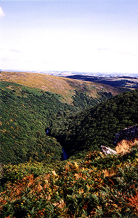

THE DART VALLEY

A cobalt blue River Dart winds its way down to the South Hams area of Devon and out to the sea. The photo was taken from Bench Tor with the river hundreds of feet below. The Dart, which gives its name to Dartmoor, has a fearsome reputation for demanding at least one human life per year. There is even an old rhyme about it:
"River of Dart, O river of Dart,
Every year thou claimest a heart"
The sound of the river in the valley below can be very loud and at certain times can sound like a human cry. It was well known to the people who lived nearby, who said the sound was the river crying out for a victim. Needless to say, Drake H3 do not try to cross the river at this point.
| < on back |